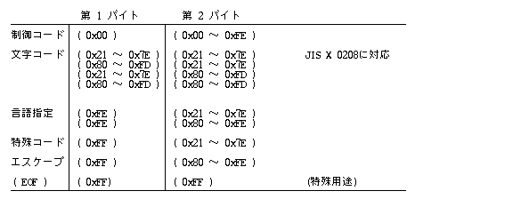
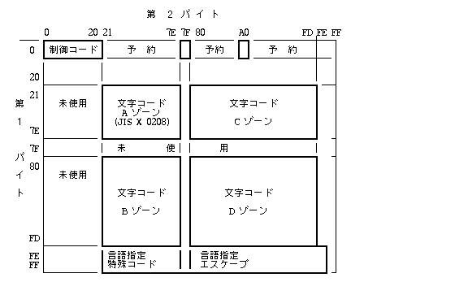

2.1 Загальні відомості про специфікацію TRON Code
2.1.1 Багатомовна підтримка (Multilingual Support)
2.1.2 Набори символів (Character Sets / Скрипти)
Традиційно символи, яким не було призначено стандартизованого коду, оброблялися як спеціальні користувацькі символи (Gaiji). У специфікації TRON Code прийнято підхід, за яким кожному символу призначається власний унікальний системний код, щоб уникнути проблеми неідентифікованих символів. Зокрема, для ієрогліфів (Кандзі) охоплено понад 45 000 символів. Така впорядкована сукупність символьних кодів називається набором символів (Character Set / Скрипт). Логотипи компаній, піктограми та візуальні візерунки вважаються графічними елементами і обробляються як растрові чи векторні зображення, а не текстові коди. Якщо виникає потреба в новому кодованому символі, він офіційно реєструється у відповідній кодовій площині.
Користувацькі символьні коди, які не визначені цією специфікацією або стандартом JIS X 0208, заборонено використовувати для обміну даними між програмами.
2.1.3 Набори шрифтових гарнітур (Font Sets)
Для одного й того самого символу можуть існувати різні шрифтові стилі та гарнітури (наприклад, Мінчьо або Готика). Усім стильовим варіантам одного символу призначається однаковий символьний код TRON Code, щоб при пошуку в базах даних або порівнянні текстів вони оброблялися як один і той самий символ. Сукупність графічних накреслень шрифтів для одного символьного набору називається шрифтовим набором (Font Set).
2.2 Зв'язок з існуючими стандартами кодування
2.2.1 JIS X 0201
Стандарт JIS X 0201 визначає 7-бітові та 8-бітові коди для обміну інформацією. Оскільки специфікація TRON Code спирається на 8-бітову та 16-бітову кодові системи, вона враховує обмеження 8-бітового стандарту JIS X 0201.
У 8-бітовій таблиці кодів діапазон C0 (від 00/0 до 01/15, а також 02/0 та 07/15) використовується для управляючих керуючих кодів. Діапазон C1 (від 08/0 до 09/15, а також 10/0 та 15/15) є зарезервованим або використовується для розширених управляючих кодів.
Оскільки в японському тексті одночасно використовуються кандзі, кана та латинські букви, часте перемикання між 1-байтовими та 2-байтовими кодами є неефективним. Тому у специфікації TRON Code весь японський текст кодується виключно 2-байтовими кодами.
У специфікації TRON відсутнє поняття «напівширинних» (Half-width) або «повноширинних» (Full-width) символів. Ці властивості керуються спеціальними вкладками специфікації форматування (Fusen). Докладніше див. розділ 3.5.4 Вкладки параметрів символів та шрифту.
2.2.2 JIS X 0208
Стандарт JIS X 0208 виділяє кодову область на 8 836 символів, з яких призначено 6 877 символів (включно з 6 353 ієрогліфами кандзі за JIS X 0208-1983).
Специфікація TRON Code повністю включає кодові позиції та символи стандарту JIS X 0208, зберігаючи їхній оригінальний порядок та кодові значення.
2.3 Система кодування японських символів TRON Code
2.3.1 Огляд структури
Система кодування японських символів у TRON Code є 2-байтовою символьною системою і виступає повним розширенням (Superset) стандарту JIS X 0208.

2.3.2 Таблиці кодів японських символів TRON

2.3.3 Пояснення до кодових площин TRON
Коди діапазону від (00)(00) до (00)(20), а також (00)(7F) призначені для системного управління. (Другий байт управляючого коду є спільним як для 1-байтової, так і для 2-байтової кодової системи TRON).
З-поміж них наступні коди мають особливе значення у TRON Code і (за винятком анульованого коду 0x00) можуть генеруватися клавішами введення:
| (00) | Нікчемний код (TNULL) | Ігнорується при обробці тексту так, ніби він відсутній. Зазвичай використовується як термінатор кінця символьного рядка (Null-byte). |
| (09) | Табуляція (TAB) | Перехід до наступної позиції табуляції або наступного текстового поля. |
| (0A) | Новий абзац (NL) | Перехід на новий абзац. У текстових блоках відокремлює абзаци один від одного. |
| (0B) | Нова колонка | Перехід на нову текстову колонку. |
| (0C) | Нова сторінка | Перехід на нову сторінку документа. |
| (0D) | Новий рядок (CR) | Перехід на новий рядок у межах поточного абзацу або текстового поля. |
| (20) | Розділювач (SP) | Пробіл / розділювач слів та фраз. |
Докладніше про визначення полів див. 3.5.3 Вкладка форматування рядка та абзацу.
| Блок 1: | (21)(21) - (7E)(7E) | Зона A | 8 836 символів | |||||||||||||||||||||||||||||||||||||||||
| ||||||||||||||||||||||||||||||||||||||||||||
| Блок 2: | (80)(21) - (FD)(7E) | Зона B | 11 844 символи | |||||||||||||||||||||||||||||||||||||||||
| Блок 3: | (21)(80) - (7E)(FD) | Зона C | 11 844 символи | |||||||||||||||||||||||||||||||||||||||||
| Блок 4: | (80)(80) - (FD)(FD) | Зона D | 15 876 символів | |||||||||||||||||||||||||||||||||||||||||
Зона A відповідає кодовим позиціям стандарту JIS X 0208.
Зона B містить уживані кандзі та спеціальні символи, відсутні в JIS X 0208.
Зони C та D призначені для рідкісних ієрогліфів, історичних знаків та розширених символьних наборів.
Коди переключення мовних площин: (FE)(21) - (FE)(7E) та (FE)(80) - (FE)(FE).
Вказують на зміну поточного мовного скрипту або алфавіту у символьному потоці. Загалом 2-байтова система переключення дозволяє підключати до 220 мовних скриптів.
Спеціальні коди TRON: (FF)(21) - (FF)(7E) (всього 94 кодові позиції).
Використовуються для вставки спеціальних службових керуючих маркерів у потік тексту.
Ескейп-коди TRON: (FF)(80) - (FF)(FE).
Служать префіксними префіксами/розділювачами для вбудовування функціональних вкладок (Fusen) та розширюваних сегментів у документ TAD (докладніше див. 3.3 Огляд структури даних TAD). Всього визначено 127 ескейп-сегментів TRON.
2.3.4 Додаткові відомості
- Кодовий пара (0xFF)(0xFF) при інтерпретації як знакове число дорівнює -1 і використовується як маркер кінця файла (
EOF). - Для форматування вирівнювання та відступів пробіли не використовуються; замість цього застосовуються текстові вкладки (Fusen). Символи
NL,TAB,SPтаTNULLвбудовуються безпосередньо у потік символів TRON Code. - Підтримується 3 типи пробілів (
SP):Японський режим (Japanese Script): Фіксований пробіл Кандзі SP ( 0x21/0x21)— Клавіша пробілу в режимі Кандзі Латинський режим (ASCII / English Script): Фіксований пробіл ASCII SP ( 0x00/0xA0)— Клавіша пробілу в режимі латини Пропорційний пробіл SP ( 0x00/0x20)— Пропорційний пробіл для вирівнювання тексту
Повернутися до загального змісту розділу
Попередня сторінка: Розділ 1. Базові типи даних (Повернутися)
Наступна сторінка: Розділ 3. Специфікація TAD (Перейти)